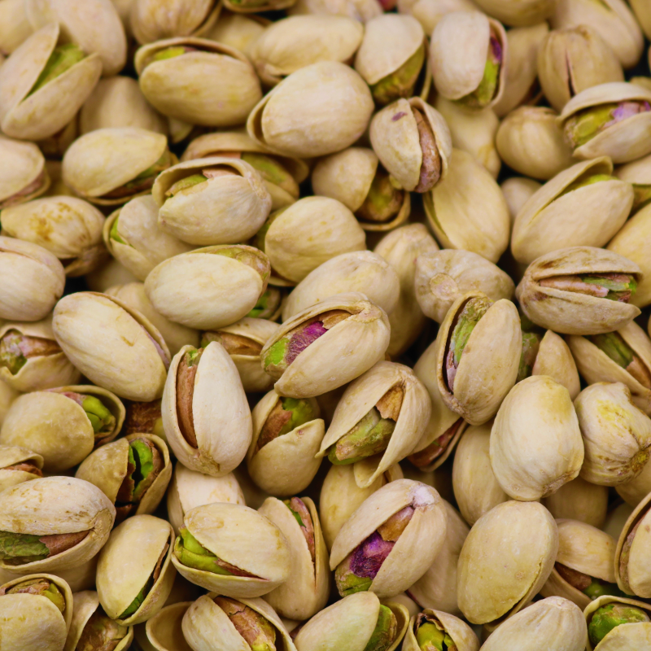
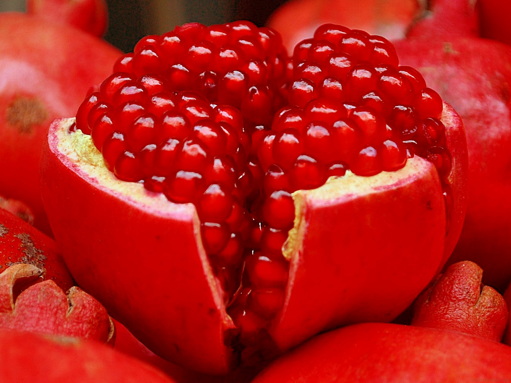

Beets are high in nitric oxide, which can help open your blood vessels and lower blood pressure. Researchers also found that the nitrates in beetroot juice lowered research participants’ blood pressure within just 24 hours.
You can juice your own beets or simply cook and eat the whole root. Beetroot is delicious when roasted or added to stir-fries and stews. You can also bake them into chips. Be careful when handling beets — the juice can stain your hands and clothes.
3.Pistachios

Pistachios are a healthy way to decrease blood pressure by reducing peripheral vascular resistance, or blood vessel tightening, and heart rate. One study found that a diet with one serving of pistachios a day helps reduce blood pressure.
You can incorporate pistachios into your diet by adding them to crusts, pesto sauces, and salads, or by eating them plain as a snack.
4.Pomegranates

Pomegranates are a healthy fruit that you can enjoy raw or as a juice. One study concluded that drinking a cup of pomegranate juice once a day for four weeks helps lower blood pressure over the short term.
Pomegranate juice is tasty with a healthy breakfast. Be sure to check the sugar content in store-bought juices, as the added sugars can negate the health benefits.